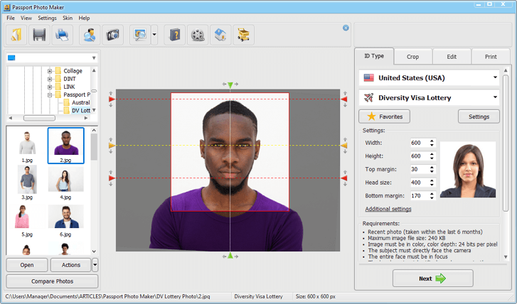

DV Lottery photo requirements
The photo requirements for the DV Lottery are rigorous. Even minor deviations will result in your immediate disqualification by the US authorities. To prevent this, we will guide you through the DV Lottery photo process and get you one step closer to getting your Green Card.
The US government has established precise photo rules for the yearly DV Lottery. They determine the format, size, and age of the photos to be submitted and specify rules for wearing glasses and headgear.
These rules apply to all pictures you are submitting. You might ask yourself: how many images are even needed for the DV Lottery? The answer: one picture for each person who would acquire the right to a Green Card due to your DV Lottery win.
Therefore, you must submit a picture of yourself, your spouse (if applicable), and your children.
Getting help with your DV Lottery photo
Instead of creating the photo for the DV Lottery yourself and having to keep track of the many treacherous requirements, you can also use iVisa's photo services.
Save time and reduce the risk of faulty photos and DV Lottery disqualification by visiting the DV Lottery photo service tool, choosing “Diversity Visa Lottery,” “United States,” and your country of residence.
After taking and uploading your photo, iVisa will take care of the correct format and send the finished DV Lottery photo back to you in no time (max. 4 hours).
Using passport photos for the DV Lottery
For your DV Lottery registration, you should not use the same photo as in your passport unless it is very new. Why? The US authorities will compare your DV Lottery photo with your passport and might conclude that the picture is not up to date. But how old may a Green Card photo be?
The Diversity Visa Lottery process:
green card lottery
Take the Expert test to decide your eligibility to enter the Lottery
Pay the small mandatory administrative Application fee
Receive your registration number and password to your account
In your account, complete/change your information
Provide/upload photos of yourself and any co-applicant
Submit your DV 2025 Lottery application
Check on-line, if you were selected in the Green Card Lottery
Example of some important informations

example of photo fo dv 600*600 pixel . Painted in 2022.
Apply now & win a Green Card